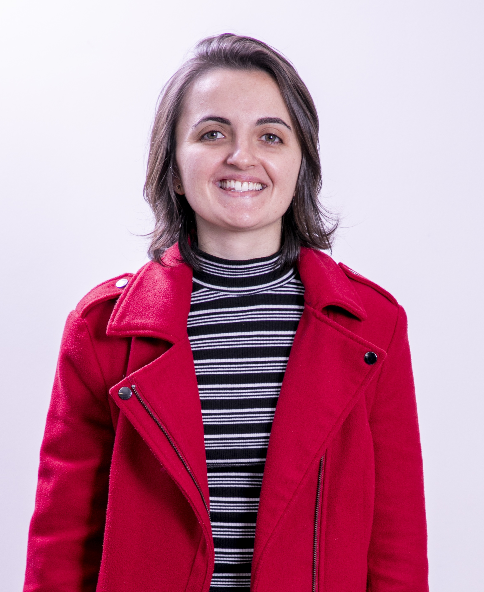

Prepare-se para alcançar o cargo dos seus sonhos com um desempenho de outro mundo.
Aprenda a estudar de modo autônomo e completo com o Estudo Total e transforme seu estudo em algo que realmente funciona para você.
Assista ao vídeo para entender como funciona o Estudo Total!

[ Foto da mentora Nazli ]Engenheira de formação. Auditora de profissão. Estudei para concursos de 2018 a 2023 (e brevemente em um pós-edital em 2025/2026). Inicialmente, foquei na área fiscal. Depois migrei para a área de controle e, por fim, voltei para a área fiscal.
Minhas aprovações:
• Sefaz SP – Auditor Fiscal da Receita Estadual (2026): 1º lugar
• ISS SP – Auditor Fiscal Tributário Municipal (2023): 1º lugar
• Receita Federal – Auditor Fiscal (2023): 6º lugar
• TCU – Auditor Federal de Controle Externo (2022): 1º lugar
• CGU – Auditor Federal de Finanças e Controle (2022): 3º lugar
• TCDF – Auditor de Controle Externo (2021): 5º lugar
• TCE RJ – Auditor de Controle Externo (2021): 6º lugar
• ISS Campinas – Auditor Fiscal Tributário Municipal (2019): 5º lugar
• ISS Campo Grande – Auditor Fiscal da Receita Municipal (2019): 14º lugar
• ISS Valinhos – Auditor Fiscal (2019): 1º lugar
• ISS Guarulhos – Inspetor Fiscal de Rendas (2019): 1º lugar
• ISS Itapevi – Auditor Fiscal Tributário (2019): 3º lugar
Ao longo dos meus estudos, dediquei-me a estudar não só as matérias de concursos, mas também sobre como estudar cada vez mais e melhor. Isso se transformou em grande diferencial competitivo e agora estou aqui para transmitir esse conhecimento para você! Vamos juntos(as) rumo à sua aprovação? :)
O Estudo Total foi o método que desenvolvi para passar em 12 concursos de alto nível, sempre nas primeiras colocações.
Desde cedo, entendi que não bastava "só estudar" para ser aprovada. Eu precisei aprimorar meu foco, minha disciplina e minha capacidade de planejamento para ganhar vantagem competitiva real e aproveitar melhor cada momento de estudo.
Entendi que ser aprovado(a) não é só sobre estudar, é sobre a pessoa que você se torna enquanto estuda.
O Estudo Total é o resultado da bagagem que acumulei em mais de 8 anos de experiência no mundo dos concursos sobre como se tornar uma pessoa apta a ser aprovada em qualquer concurso.
Os módulos do Estudo Total foram pensados na ordem exata em que você precisa deles. Veja os módulos abaixo, bem como o comparativo do curso com a mentoria.
Aqui você encontrará o método estruturado em um passo a passo pronto para replicar e alcançar um desempenho de outro mundo nas provas! Preparado(a)? A sua aprovação te aguarda!
Acesse o conteúdo no seu ritmo, de qualquer lugar e a qualquer hora. Assista quantas vezes quiser.
Resumos do método em PDF, planilhas estratégicas e outros recursos para aplicar o método na prática.
Diversos vídeos de mão na massa em que mostro na prática a aplicação do método.
| Módulos | Curso | Mentoria |
|---|---|---|
| Conteúdo do Estudo Total | ||
1 · Fases do estudo (novo, sólido e final) Como estudar no pré e no pós-edital, como revisar de modo eficiente e eficaz, como aumentar seu percentual de acertos, como avaliar se está pronto(a) para uma prova, como ser aprovado(a) sem estudar tudo, como estudar o que realmente cai. |
✓ | ✓ |
2 · Planejamento Como montar e evoluir um ciclo de estudos realmente personalizado para você, como estabelecer metas desafiadoras e realistas. |
✓ | ✓ |
3 · Disciplina e Foco Como criar e manter a disciplina e o foco necessários para a aprovação, aplicativos e ferramentas úteis, como maximizar o tempo de estudo, como diminuir e se recuperar de distrações, como mudar seus hábitos, como parar de procrastinar. |
✓ | ✓ |
4 · Acompanhamento e Métricas Quais são as poucas métricas que realmente importam, como acompanhar e agir a partir dessas métricas. |
✓ | ✓ |
5 · Discursivas Como estudar para discursivas, receitas de bolo que funcionam, como corrigir suas próprias discursivas. |
✓ | ✓ |
6 · Recursos Como fazer bons recursos de provas objetivas e discursivas (isso economiza muito dinheiro – acredite!). |
✓ | ✓ |
7 · Estudo com IA Como usar a inteligência artificial para alavancar seus estudos de modo seguro. |
✓ | ✓ |
8 · Como voltar a estudar depois de muito tempo Como retomar os estudos depois de um tempo parado(a) sem recomeçar do zero. |
✓ | ✓ |
9 · Migrando de área Como avaliar se faz sentido mudar de área, como fazê-lo de modo inteligente e eficiente. |
✓ | ✓ |
10 · Bem-estar nos estudos Como manter a saúde física e mental durante os estudos com tempo tão limitado. |
✓ | ✓ |
| Recursos exclusivos da mentoria | ||
Diagnóstico completo e individual |
✕ | ✓ |
Acesso individual ao WhatsApp da Nazli |
✕ | ✓ |
Acompanhamento individual com a Nazli |
✕ | ✓ |
Sessões ao vivo em grupo com a Nazli |
✕ | ✓ |
| Suporte e acesso | ||
Período de acesso às aulas e aos materiais |
12 meses | 12 meses |
Período de acesso aos recursos exclusivos da mentoria |
— | 6 meses |
Suporte no fórum de dúvidas (dúvidas sobre o método) |
✓ | ✓ |
Suporte por WhatsApp (dúvidas sobre seu caso pessoal) |
✕ | ✓ |
Investimento Escolha a melhor opção para você |
R$ 997ou 12x de R$ 103,11
Adquirir o curso
|
Vagas limitadas
Entrar na lista de espera
|
↔ Arraste para o lado para ver a tabela completa
Histórias reais de Estudantes Totais.
A Nazli foi fundamental na minha trajetória.
Segui a metodologia dela à risca para discursivas e os resultados vieram: hoje sou Auditor do TCU e fui nomeado na SEFAZ-CE.
Podem confiar de olhos fechados.
Os ensinamentos da Nazli foram fundamentais na minha preparação. Aprendi a estudar com menos quantidade e mais qualidade, a estruturar revisões e a usar planilha para entender meus erros e ajustar a preparação. Com metas realistas, mantive a motivação sem perder o ritmo. Não recebi só orientação — construí uma bagagem que vai me acompanhar nos próximos concursos.
Com a ajuda da Nazli, consegui montar um planejamento de estudos e adaptá-lo ao longo do tempo, focando nas matérias que eu mais precisava e deixando minha rotina mais produtiva e direcionada. Ela também me ajudou com dicas de como organizar minhas anotações e criar meu próprio material para a revisão final pré-prova.
Melhorei 1000% os meus horários e estou rendendo muito mais. Agora eu consigo terminar de estudar bem mais cedo (cumprindo todas as metas). Estou muito mais seguro com seu método e seguindo o que você ensina. É bizarro como eu não tinha segurança alguma no jeito que eu estava estudando. Tenho certeza que sem isso, eu "bateria cabeça" em diversos pontos. Estou aprendendo muito agora.
Esse curso ET está sendo o divisor de águas pra mim. Agora estou estudando com direção e sabendo o passo a passo. Muito obrigado, Nazli.
Os vídeos dela explodem a mente da gente. Só dá vontade de agradecer enquanto assisto.
Top demais viu!! Conheço muitas mentorias, mas ninguém apresentou um material como o seu!! Muito feliz com o investimento!
Simplesmente FAN-TÁS-TI-CO! AMEI!
O curso é MARAVILHOSO ❤️❤️.
São detalhes que fazem muita diferença. Tenho certeza de que, com as suas instruções e muitas horas de estudo, alcançarei meu objetivo de ser Auditora. Muito obrigada por dividir tanto conhecimento. Estou amando o curso ❤️!
Não é à toa que você é o “Pelé dos concursos”. Tem tantos detalhes que eu sei que vou rever mais de uma vez com calma, porque cada vírgula ali importa muito, ensinamentos de um mestre. Pessoas que já estão há anos na mesma metodologia sabem o quanto é difícil confiar e mudar baseado em outro método, corrigir vícios antigos, manias, desconstruir, mas você é literalmente de outro planeta (ET). Já admirava. Após o cuidado e profissionalismo com que você fez o curso, admiro mais ainda.
Só passando pra dar o feedback que assisti todos os vídeos liberados e dizer que AMEI o conteúdo. Muito obrigada por tanta informação! Simplesmente IMPECÁVEL! Pra cima 👏🏻😍🚀🚀
Suas aulas são excelentes e sua técnica é absurda de boa!
Alcance o cargo dos seus sonhos com um desempenho de outro mundo.